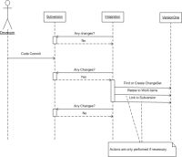
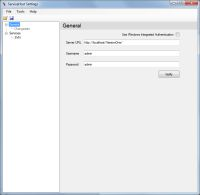
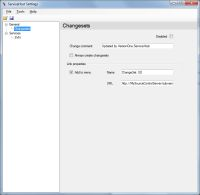
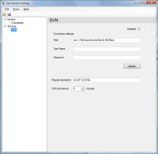

Description
The VersionOne Subversion Integration (V1Svn) creates a record of Subversion changesets in VersionOne, so the development team can quickly view all of the code changes for a story or defect. This visibility can be useful when tracking down defects or performing code reviews.
Once V1Svn has been installed, development team members include a story or defect ID, such as “S-01454” in their Subversion commit messages. V1Svn checks each commit message for IDs and creates a changeset within VersionOne for each story or defect matching the entered IDs. A changeset is the collection of changes for a single revision in Subversion. The changesets for each story or defect are viewable on the details page of that item in VersionOne. Additionally, V1Svn has the capability to create link on the changeset in VersionOne that navigates to the changeset in a Subversion repository viewer
The following sequence diagram illustrates how V1Svn interacts with Subversion and VersionOne.

{kind=link}
System Requirements
- VersionOne: 7.1 or above
- Integration Server:
- Operating System—Windows 2003, 2008
- Framework—Microsoft .Net 2.0 SP1
- Subversion Server:
- Tested with Subversion Server 1.6.2
- Protocol — svn, http, https
- Basic SVN authentication or Anonymous
Download
The latest version of V1Svn is available from the VersionOne Community site
Installation
These installation instructions assume that Subversion is already installed, configured, and working properly.
- Determine Install Location
V1Svn can be installed on any server with network access to both VersionOne and Subversion. Exact placement should be determined by your internal software management requirements. The integration server must meet the System Requirements stated above.
- Extract Files
Download V1Svn using the link above and extract it into a folder of your choice.
- Configure
Instructions for configuring V1Svn are located below in the "Configure The Integration" section
- Start integration
Open up the command prompt, navigate to your installation folder, and run the following command:VersionOne.ServiceHost.exe
If you have configured your system properly, you should see several [Info] messages followed by a [Startup] message.
- Test the integration
To ensure the integration is working, perform the following steps:- Commit a change to your Subversion repository with a message of “test”. You should see the following output:
[Info] Publishing ChangeSet: #, "test"; No References found. [Info] No Change Set References. Ignoring Change Set: # - Commit a change to your svn repository with a message of “S-01001”. You should see the following output:
[Info] Publishing ChangeSet: #, "S-01001"; references: S-01001 - Shut down the service host by pressing “Q” in the console window.
- Commit a change to your Subversion repository with a message of “test”. You should see the following output:
- Install as a Windows Service
Run the following command from the console window:VersionOne.ServiceHost.exe --install
This command installs the service so it will will run under the account NT AUTHORITY\Local Service. Local Service must be given access privileges to the directory where the V1ClearQuest executable was installed so it can store its state and write to log files. Follow the steps below to change the security on the installation directory:
- Right click the installation folder from Windows Explorer.
- Select "properties".
- Select the "Security" tab.
- Click the "Add" button.
- Enter "Local Service" and click "OK".
- Click the "Allow" checkbox for the "Full Control" row .
- Click "OK" to save the changes.
Configuration
Configure the Integration
To configure V1Svn you need to run the ServiceHost configuration tool
ServiceHostConfigTool.exe
The following section describes how to configure your Subversion integration using the use the configuration tool
- Specify your VersionOne connection details on the General

The following table describes the fields on this tabField Description Server URL This is the URL to your VersionOne server Username VersionOne user that will create defects Password Password for the specified user Use Windows Integrated Authentication Check this box if you VersionOne server is configured to use Windows Integrated Authentication 
When using the integrated authentication, V1Svn will authenticate to VersionOne using the Windows domain user under which the executable is running if both the username and password parameters are blank. If the username and password is entered, you must specify the windows domain account in the form "User@FullyQualifiedDomainName". If you are unsure what the fully qualified domain name is, see the Domain name shown on the 'Computer Name' tab in the My Computer...Properties dialog. - Once the VersionOne parameters are entered, press Verify button to continue.
- Specify how to create a VersionOne Change set and link it to Subverison on the Changesets tab.

The following table describes the fields on this tabField Description Disabled Check this box to disable ChangeSet creation in VersionOne. Change Comment The VersionOne ChangeSet creation comment. Always Create ChangeSet If checked, a VersionOne ChangeSet is created for each Subversion ChangeSet. If cleared, the VersioOne ChangeSet is only created if a VersionOne identifier can be found in the Subversion commit comment. The Link Properties section contains the following fields
Field Description Add To Menu If checked, the link between VersionOne and Subversion is placed on the ChangeSet Details page tab menu. If cleared, there is no tab menu element for the link. Name Friendly name for this link. Defaults to "ChangeSet {0}" and the {0} is replaced with the Subversion ChangeSet Identifier URL Fully qualified URL to your web based Subversion Viewer (i.e. ViewVC). The Subversion ChangeSet identifier is set by putting {0} in the URL - Specify your Subversion connection details and how the integration will identify ChangeSets for VersionOne on the Subversion tab.
- Configure the Subversion connection (Connection Parameters)
Field Description Disabled Check this box if you want to disable polling Subversion for ChangeSets. Path Fully qualified URL to the Subversion repository monitored by this integration instance. User Name Valid Subversion user for the repository specified Password Password for specified user - Click Verify to ensure the connection parameters are correct.
- Configure how to identify ChangesSets
Field Description Regular Expression This is the Regular Expression used to search Subversion commit comments for VersionOne identifiers. Poll Interval Determines how frequently the integration polls Subversion looking for Defects. Here are some sample Regular Expressions: To Match S-01001 (Matches "S-01001") [A-Z]{1,2}-[0-9]+To match #Reference (matches only "Reference") (?<=#)[a-zA-Z]+\b
To match "V1:Reference" (matches only "Reference") (?<=V1:)[a-zA-Z]+\b
- Configure the Subversion connection (Connection Parameters)
- Save your changes and exit the program
{kind=link}
{kind=link}
{kind=link}
Technical Details
VersionOne.ServiceHost.exe.config
VersionOne.ServiceHost.exe.config is the file that controls the behavior of VersionOne.ServiceHost.exe. Values in this file are set by the configuration tool (ServiceHostConfigTool.exe). This section is provided for informational use only. Users are discouraged from editing this file directly.
The SvnReaderService Element controls how the integration communicates with Subversion. The following table describes the elements nested under SvnReaderService.
| Element Name | Description |
|---|---|
| RepositoryPath | Subversion repository URL |
| UserName | Subversion user name. If omitted or empty, anonymous access will be used |
| Password | Subversion password (can be empty). If omitted, anonymous access will be used. |
| ReferenceExpression | Regular Expression used to locate a VersionOne identifier in the Subversion commit comment |
The ChangeSetWriterService element controls how ChangeSets are created in VersionOne. The following table describes the elements nested under ChangeSetWriterService. ||Element Name||Description||
| ReferenceAttribute | The VersionOne filter attribute to use when retrieving workitems from VersionOne. The default is Number (the value visible in the UI). We do not recommend changing this value. |
| ChangeComment | Comment to put on the ChangeSet when it's created |
| Settings | |
| Element Name | Description |
|---|---|
| ApplicationUrl | VersionOne Application URL |
| Username | Valid VersionOne Username. This user must have authority to create defects in the VersionOne projects being processed. |
| Password | Password for specified user |
| APIVersion | The minimum application version required for this hosted service. |
| IntegratedAuth | False if using VersionOne native security, true is using Windows Integrated Security. If VersionOne is configured to use Windows Integrated Security, the account the service is running as must be a configured VersionOne user with a project role of Team Member or higher. Also, Username and Password should be empty if IntegratedAuth is true. |
| Link | |
| Element Name | Description |
| Name | VersionOne Title for link |
| URL | URL for your repository viewer |
| OnMenu | Determines value for the "On Menu" checkbox. If True, link appear as a tab in the Details panel. If false they do not appear as tabs. |
The SvnReaderServiceTimer element controls the Subversion poll frequency. The following table describes the elements nested under SvnReaderServiceTimer.
| Element Name | Description |
|---|---|
| Interval | Number of milliseconds to wait between polls to the Subversion system |
| PublishClass | Do Not Change |